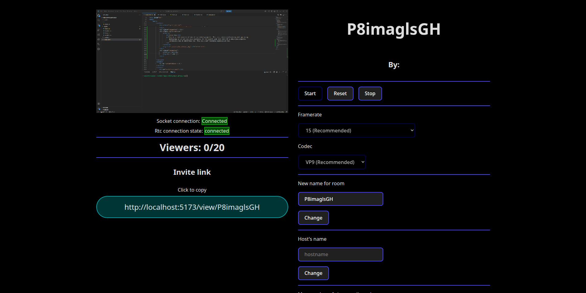

Improvise, Adapt, Overcome,
I deliver solutions fast,
About me
I'm naturally curious when it comes to technology. I love trying out new stacks and figuring out what makes them tick.
I've been coding since I was 13, spending most of my time in the Node.js ecosystem before expanding into Go. Over the past two years, I've accelerated my growth by picking up React, moving to TypeScript for better code clarity, and actively ditching bad coding habits to build cleaner software.
As I kept leveling up, I put my skills to the test in national competitions. I placed 3rd in the Hungarian qualifiers for WorldSkills 2026, and returned the following year to take 2nd place in the EuroSkills 2027 national qualifiers, ranking among the top young developers in the country both times.
Right now, I maintain three active projects (two getting new features, one in maintenance). Beyond those, I've written countless scripts and side apps just for the love of the game, many of which grew into fully polished, usable software.
Tech Stack
Currently I am working/planning with the following stack(s).
- Current Stack: NodeJS,React,TypeScript
- Currently Exploring: Go, Microservices, Desktop Application development, System Design
- Tools & Ecosystem: Git, Linux, REST APIs
- For Databases: Mysql/Mariadb
Projects
My latest and greatest projects
Pigon Micro
A self-hosted, end-to-end encrypted chat application rebuilt from the ground up.
It supports text, image, and video messaging alongside peer-to-peer calling via WebRTC.
Under the hood, it uses AES-GCM for encryption and ECDH for secure key exchange.
Currently running on a Web UI, with a native desktop app (written in Go / Fyne) actively in
development.
Repository: github.com/kiralysanyi/pigon-micro
Vchat-Neo
A lightweight, self-hosted video conferencing web app built as a complete rewrite of an earlier
project.
Leverages Mediasoup to handle media routing efficiently on the server side, keeping client
resource usage minimal even in calls with 20+ active participants.
Repository: github.com/kiralysanyi/vchat-neo
Simple Screenshare
Does exactly what the name implies: zero-bloat local screen sharing.
Originally built back in school to solve a real classroom issue: students couldn't see the
physical whiteboard clearly, and bad internet bandwidth made Google Meet lag out. I built a
local alternative using Mediasoup, which served as my hands-on lesson in why pure P2P WebRTC
doesn't scale well to 30+ local clients. (According to my latest info, it's still in use.)
Repository: github.com/kiralysanyi/simple-screenshare

Competitions
The stuff that kicked in the last 2 years of my improvements.
WorldSkills 2026 Hungarian National Qualifiers
This was my entry point into competitive coding. During my final year of school, my teacher
suggested I join a national competition, and I figured, why not?
That initial round became my motivation to master React and CSS. Round two was pure
hustle, traveling 3.5 hours to Budapest on 3 hours of sleep for an 8-hour on-site marathon. I
placed in the top 3 out of 8 finalists, advancing to the final round.
The third round was a multi-day endurance test where we built live in front of a crowd and
photographers. Ultimately, I finished 3rd overall. This was an unforgettable experience that
completely
built up my confidence under pressure.
EuroSkills 2027 Hungarian National Qualifiers
This was my second shot at the qualifiers. While I didn't take the top spot, the growth from the previous year was undeniable. Armed with more hands-on experience, I powered through an entirely new set of complex tasks and took 2nd place. Maybe the third try brings 1st? Who knows.